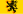
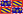
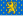
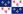
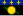

List of French regions and overseas departments by GRP per capita
This article is about the gross regional product (GRP) per capita of French regions and overseas departments in nominal values.[1] Values are shown in EUR€. For easy comparison, all the GRP figures are converted into US$ according to annual average exchange rates.[2][n 1] All values are rounded to the nearest hundred.
2018
[edit]| Region or DOM | Rank | GRP per capita (EUR€) | GRP per capita (US$) |
|---|---|---|---|
| — | 35,000 | 41,300 | |
| Île de France | 1 | 59,700 | 70,500 |
| Rhône-Alpes | 2 | 35,100 | 41,500 |
| Alsace | 3 | 32,100 | 37,900 |
| 3 | 32,100 | 37,900 | |
| Midi-Pyrénées | 5 | 32,000 | 37,800 |
| 6 | 31,400 | 37,100 | |
| Aquitaine | 7 | 30,900 | 36,500 |
| 8 | 29,700 | 35,100 | |
| 9 | 29,400 | 34,700 | |
| Champagne-Ardenne | 10 | 28,400 | 33,500 |
| 11 | 28,200 | 33,300 | |
| Centre-Val de Loire | 12 | 28,100 | 33,200 |
|  Nord-Pas-de-Calais | 13 | 27,900 | 33,000 |
| Poitou-Charentes | 14 | 27,900 | 33,000 |
|  Burgundy | 15 | 27,600 | 32,600 |
| Lower Normandy | 16 | 27,300 | 32,200 |
| Limousin | 17 | 26,800 | 31,700 |
| Auvergne | 18 | 26,600 | 31,400 |
|  Franche-Comté | 19 | 25,900 | 30,600 |
| Martinique | 20 | 25,900 | 30,600 |
| Languedoc-Roussillon | 21 | 25,700 | 30,400 |
| Lorraine | 22 | 25,000 | 29,500 |
|  Picardy | 23 | 24,900 | 29,400 |
|  Guadeloupe | 24 | 24,400 | 28,800 |
| 25 | 23,600 | 27,900 | |
| French Guiana | 26 | 16,000 | 18,900 |
| Mayotte | 27 | 10,000 | 11,800 |
{kind=link}
{kind=link}
{kind=link}
{kind=link}
{kind=link}
{kind=link}
{kind=link}
{kind=link}
{kind=link}
{kind=link}
{kind=link}
{kind=link}
{kind=link}
{kind=link}
{kind=link}
{kind=link}
{kind=link}
{kind=link}
.svg){kind=link}
{kind=link}
.svg){kind=link}
See also
[edit]Notes
[edit]- ^ Euro figures are converted to USD rates as of 31 December of a given year.
References
[edit]- ^ "Regional GDP per capita ranged from 30% to 263% of the EU average in 2018". ec.europa.eu. Retrieved 15 December 2020.
- ^ "Yearly Average Rates & Forex History Data". OFX. Retrieved 15 December 2020.